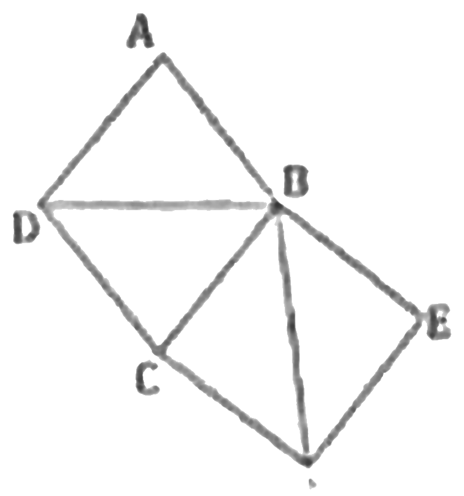
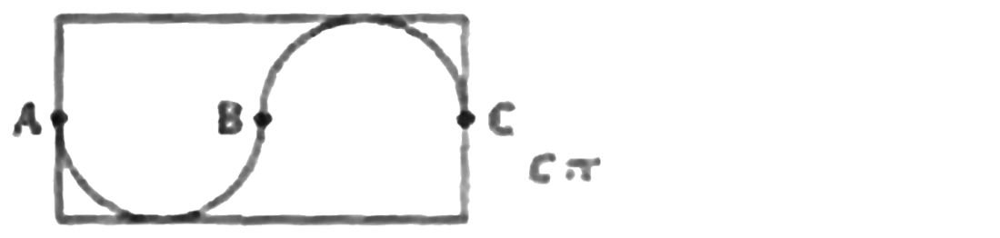

נתון: |x| − |y| > 0 , x · y < 0
מה מהבאים נכון בהכרח?
√5 + 1√5 − 1 = ?

בסרטוט שלפניכם מעוין ABCD וריבוע BCEF. היקף הצורה שנוצרה הוא 54 ס"מ. נתון: מרחק הנקודה D מהצלע BC הוא 6 ס"מ.
מה גודל השטח הכהה (בסמ"ר)?
נתון: 4 < x
4 − x−7 + 1(1x−3) · (1x+3) = ?
⚠ הפעולה בין 1x−3 ל־1x+3 במכנה קטנה בסרטון; נקראה ככפל (זה מה שמתיישב עם התשובות).
בסרטוט שלפניכם שני חצאי מעגל החסומים במלבן.
עמית ואורי יצאו, באותו הזמן, לריצה מהנקודה A. עמית רץ לאורך חצאי המעגל, מהנקודה A אל הנקודה C וחזרה לנקודה A. אורי רץ מהנקודה A לאורך היקפו של המלבן עד להשלמת סיבוב שלם וחזרה לנקודה A.
בהנחה שמהירויותיהם של עמית ואורי שוות, מי מהם סיים ראשון את ריצתו?

נתון: 9x2 + 27x3 + 243x5 = 3|x|
x = ?
בכמה אחוזים גדול (300 + 3a) מ־300?

בסרטוט שלפניכם 9 מעגלים זהים החסומים בתוך ריבוע. אורכו של הקו המודגש הוא 8√2 ס"מ.
לאור נתונים אלו והנתונים שבסרטוט, מהו שטחו של הריבוע (בסמ"ר)?
נתון: x < |x| < 1 , y² < |y| < 1
מה מהבאים נכון בהכרח?
⚠ עמודים 50–53 דילגו בסרטון: חסרות שאלה 10 של מקבץ 11 ושאלות 1–9 של מקבץ 12.